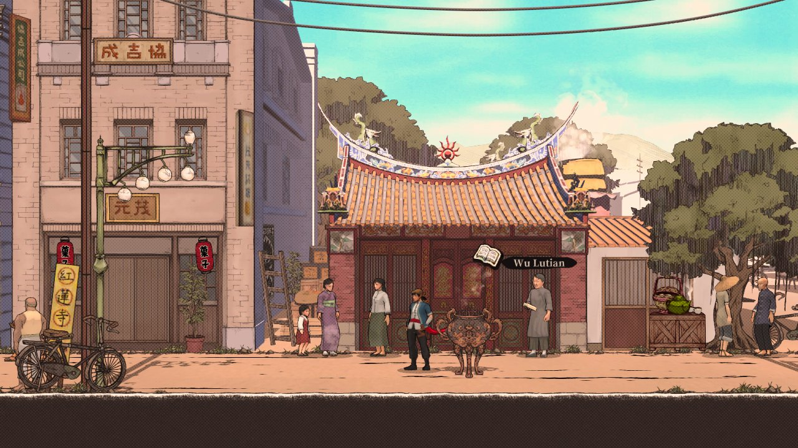

Jogue como Liao Tianding, vigilante da cidade de Taipei e procurado pelas autoridades coloniais japonesas.
Roube os ricos, alimente os pobres e lute pela justiça nas ruas de Taipei do início do século 20 como o lendário fora-da-lei de Taiwan.
Baseado em eventos reais, pessoas reais e situações reais, The Legend of Tianding é uma exploração de um lugar e tempo muitas vezes esquecido e apresentado no estilo do mangá tradicional chinês. Lute contra as autoridades coloniais em grande estilo com um tanto, faixa de cintura e Kung Fu rápido em combate técnico bem ajustado. Execute combos aéreos avançados, roube armas de seus inimigos, use sua faixa de cintura e gancho para voar pelo campo de batalha e causar medo nos corações de seus opressores. Enfrente chefes incríveis como cortesãs mortais, empresários gananciosos e até líderes militares, cada um garantido para desafiá-lo com suas habilidades dinâmicas e ataques brutais. Explore a área de Dadaocheng da cidade de Taipei como era no início de 1900 Corra por ruas coloridas, ande em um trem em alta velocidade e escape por esgotos escuros, tudo feito no estilo de um mangá chinês tradicional retrô.
Enredo
Até o campo de jogo e adapte Liao Tianding ao seu estilo de jogo com diferentes talismãs equipáveis! Esses itens mágicos concedem bônus como recuperar mais saúde da comida, recuperar resistência mais rapidamente ou até mesmo reduzir o dano que você recebe. tudo feito no estilo de um mangá chinês tradicional retrô. Até o campo de jogo e adapte Liao Tianding ao seu estilo de jogo com diferentes talismãs equipáveis! Esses itens mágicos concedem bônus como recuperar mais saúde da comida, recuperar resistência mais rapidamente ou até mesmo reduzir o dano que você recebe. tudo feito no estilo de um mangá